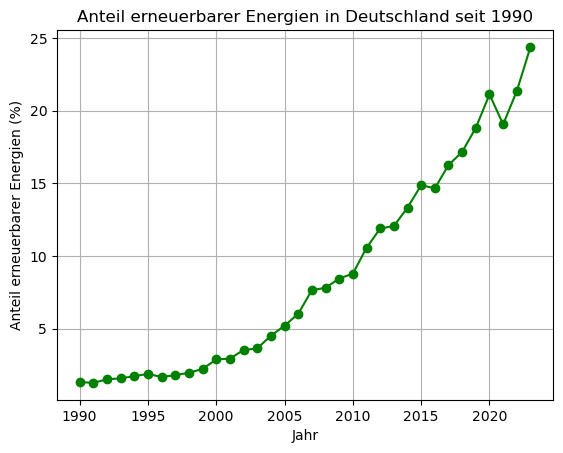

Plots individuell gestalten#
Im vorherigen Kapitel zur Visualisierung haben Sie bereits grundlegende Plots mit matplotlib erstellt und die wichtigsten Elemente eines Diagramms kennengelernt – etwa Achsen, Linien und einfache Beschriftungen. In diesem Kapitel vertiefen wir Ihre Kenntnisse und zeigen Ihnen, wie Sie Plots gezielt anpassen können, um Informationen klarer darzustellen und die Lesbarkeit Ihrer Grafiken zu verbessern.
Insbesondere lernen Sie, wie Sie zentrale Eigenschaften von Linien und anderen Plot-Elementen direkt beim Aufruf der Plot-Funktion festlegen. Dies ist hilfreich, um etwa die Linienbreite, Farbe oder den Linienstil präzise zu steuern.
Eigenschaften des Plots anpassen#
Viele Eigenschaften von Plotelementen können direkt über optionale Argumente an die Plot-Funktion (und ähnliche Funktionen) übergeben werden. Der allgemeine Aufbau sieht so aus:
plt.plot(x, y, Property1=Value1, Property2=Value2, ...).
Dabei handelt es sich um sogenannte Keyword-Argumente, also benannte Parameter. Die Eigenschaftsnamen (wie z. B. linewidth) werden als Schlüssel angegeben, die zugehörigen Werte können entweder Zahlen oder Strings sein – je nach Eigenschaft.
import matplotlib.pyplot as plt
import numpy as np
x = np.linspace(0, 2 * np.pi, 100)
y = np.sin(x)
plt.plot(x, y, linewidth=2, linestyle='--', color='red')
plt.title("Sinuskurve mit individuellen Eigenschaften")
plt.xlabel("x")
plt.ylabel("sin(x)")
plt.grid(True)
plt.show()
Hier werden drei Eigenschaften gleichzeitig gesetzt:
linewidth=2: Die Linie wird doppelt so dick wie der Standard gezeichnet.linestyle='--': Die Linie erscheint gestrichelt.color='red': Die Farbe der Linie wird auf Rot gesetzt.
Auf diese Weise können Sie viele Details Ihrer Visualisierungen direkt beim Erstellen des Plots festlegen – ohne nachträgliche Bearbeitungsschritte.
Um die individuellen Gestaltungsmöglichkeiten von Plots zu üben, verwenden wir einen realen Datensatz, der öffentlich von der Plattform Our World in Data bereitgestellt wird. Er enthält umfassende Informationen über den Energieverbrauch verschiedener Länder – unter anderem auch über den prozentualen Anteil erneuerbarer Energien am Gesamtenergieverbrauch.
Wir betrachten fünf Länder: Deutschland, USA, China, Norwegen und Brasilien, und analysieren den Zeitraum ab dem Jahr 1990.
import pandas as pd
import numpy as np
# Datenquelle
url = "https://raw.githubusercontent.com/owid/energy-data/master/owid-energy-data.csv"
df = pd.read_csv(url)
# Auswahlparameter
countries = ['Germany', 'United States', 'China', 'Norway', 'Brazil']
variable = 'renewables_share_energy'
# Daten filtern und auf relevante Spalten reduzieren
df_filtered = df[(df['country'].isin(countries)) & (df['year'] >= 1990)]
df_pivot = df_filtered.pivot(index='year', columns='country', values=variable)
# Nur vollständige Zeilen und relevante Länder
df_selected = df_pivot[countries].dropna()
# Jahr als eigene Spalte
df_selected_with_years = df_selected.copy()
df_selected_with_years.insert(0, 'year', df_selected.index)
# Umwandeln in NumPy-Array
data_array = df_selected_with_years.to_numpy()
Hinweis
Sie müssen an dieser Stelle nicht im Detail verstehen, wie die Daten im Hintergrund verarbeitet und vorbereitet wurden. Wichtig ist lediglich, dass Sie ein Gefühl für die Struktur der erzeugten Daten entwickeln – denn mit genau diesen Daten werden wir im Folgenden individuelle Plots erstellen und gestalten.
Dieser Code extrahiert den prozentualen Anteil erneuerbarer Energien am Gesamtenergieverbrauch für die fünf ausgewählten Länder ab dem Jahr 1990. Die Daten werden in ein numpy Array überführt, der wie folgt aufgebaut ist:
Spalte 0: Jahr
Spalte 1–5: Anteil erneuerbarer Energien in Prozent für Deutschland, USA, China, Norwegen und Brasilien (in genau dieser Reihenfolge)
Um ein Gefühl für den Aufbau des Datensatzes zu bekommen, können Sie sich beispielhaft die ersten fünf Zeilen des Arrays anzeigen lassen.
# Schöne Ausgabe
np.set_printoptions(precision=1, suppress=True)
# Beispielhafte Ausgabe der ersten 5 Zeilen
print(data_array[:5])
Diese Struktur erlaubt uns, die Entwicklung der erneuerbaren Energien über die Jahre hinweg länderübergreifend zu analysieren und zu vergleichen.
Nun visualisieren wir exemplarisch die Daten für Deutschland.
# Einfacher Plot mit Markern für die Datenpunkte
plt.plot(data_array[:, 0], data_array[:, 1], color='green', marker='o')
plt.title('Anteil erneuerbarer Energien in Deutschland seit 1990')
plt.xlabel('Jahr')
plt.ylabel('Anteil erneuerbarer Energien (%)')
plt.grid(True)
plt.show()

In diesem Plot wurde zusätzlich ein Marker gesetzt, der die einzelnen Datenpunkte durch kleine Kreise sichtbar macht (marker='o'). Das hilft dabei, die zugrunde liegenden Messwerte klarer zu erkennen.
In den folgenden Aufgaben lernen Sie, wie Sie das Erscheinungsbild des Plots Schritt für Schritt individuell anpassen können.
Aufgabe 1.1
Wiederholen Sie den Plot-Befehl aus dem vorherigen Abschnitt und verwenden Sie dabei eine durchgezogene Linie mit runden Markierungen. Achten Sie diesmal darauf, dass die die Größe der Markierungen (markesize) 10 entspricht.
# Ihr Code
Hinweis
Die Größe der Markierungen kann über das Argument markersize gesteuert werden: plot(x, y, markersize=10).
Lösung
plt.plot(data_array[:, 0], data_array[:, 1], color='green',
marker='o', linestyle='-', markersize=10)
plt.title('Anteil erneuerbarer Energien in Deutschland seit 1990')
plt.xlabel('Jahr')
plt.ylabel('Anteil erneuerbarer Energien (%)')
plt.grid(True)
plt.show()
Wie Sie sehen, lassen sich mehrere Darstellungsoptionen gleichzeitig angeben, indem Sie jeweils ein Paar aus Eigenschaftsname und -wert übergeben. Dabei gelten folgende Regeln:
Die Eigenschaften können in beliebiger Reihenfolge angegeben werden.
Auf jeden Eigenschaftsnamen muss unmittelbar der zugehörige Wert folgen.
Diese Name-Wert-Paare stehen am Ende der Argumentliste des Befehls.
Aufgabe 1.2
Stellen Sie die Daten mit einer durchgezogenen Linie, runden Markierungen der Größe 10 und einer blauen Füllfarbe der Marker dar. Verwenden Sie dazu die markerfacecolor-Eigenschaft.
# Ihr Code
Hinweis
Sie können mehrere Eigenschaften gleichzeitig setzen, indem Sie mehrere Paare von Eigenschaftsnamen und Werten angeben: plot(x, y, marker='o', linestyle='-', markersize=10, markerfacecolor='g').
Lösung
# Plot mit Markergröße 10 und grüner Markerfüllung
plt.plot(data_array[:, 0], data_array[:, 1], color='green',
marker='o', linestyle='-', markersize=10,
markerfacecolor='blue')
plt.title('Anteil erneuerbarer Energien in Deutschland seit 1990')
plt.xlabel('Jahr')
plt.ylabel('Anteil erneuerbarer Energien (%)')
plt.grid(True)
plt.show()
Mit matplotlib können Sie also eine Vielzahl an Darstellungsoptionen für Ihre Plots anpassen – nicht nur durch marker, linestyle und color, sondern auch durch zusätzliche Eigenschaften.
Besonders häufig verwendete Optionen für Linienplots sind:
linewidth: Dicke der Linie und der Markerrändermarkersize: Größe der Markersymbolemarkeredgecolor: Farbe des Markerrandsmarkerfacecolor: Farbe des Markerinnenbereichs
Verschiedene Diagrammtypen und Objekte in matplotlib besitzen jeweils unterschiedliche Eigenschaften, die angepasst werden können. Anstatt sich alle verfügbaren Optionen einzuprägen, empfiehlt es sich, bei Bedarf einen Blick in die offizielle Dokumentation zu werfen: Matplotlib Line2D properties.
Als praktische Hilfe finden Sie hier außerdem eine kompakte Übersicht über die wichtigsten Darstellungsoptionen, die Sie bereits kennengelernt haben – ergänzt um weitere häufig genutzte Einstellungen.
Eigenschaft |
Beschreibung |
Beispiel |
|---|---|---|
|
Linienfarbe (z. B. |
|
|
Markersymbol (z. B. |
|
|
Größe der Marker |
|
|
Füllfarbe der Marker |
|
|
Randfarbe der Marker |
|
|
Dicke der Linie und Markerränder |
|
|
Linienstil (z. B. |
|
|
Legendentext für diese Linie |
|
|
Transparenz (zwischen 0 und 1) |
|
|
Blendet die Linie aus, ohne sie zu löschen |
|
|
Form der Enden gestrichelter Linien ( |
|
Aufgabe 1.3
Nutzen Sie den folgenden Plot als Ausgangspunkt und passen Sie ihn durch gezielte Verwendung von plt.plot()-Eigenschaften an. Ziel ist es, ein besseres Gefühl für die vielfältigen Gestaltungsmöglichkeiten von Linienplots in matplotlib zu entwickeln.:::
# Einfacher Plot mit Markern für die Datenpunkte
# Probieren Sie unterschiedliche Eigenschaften aus und schauen Sie, wie sich der Plot verändert
plt.plot(data_array[:, 0], data_array[:, 1])
plt.title('Anteil erneuerbarer Energien in Deutschland seit 1990')
plt.xlabel('Jahr')
plt.ylabel('Anteil erneuerbarer Energien (%)')
plt.grid(True)
plt.show()
Hinweis
Nutzen Sie die obige Tabelle sowie die Verlinkung zur Dokumentation als Nachschlagehilfe.
Gerade bei der Darstellung mehrerer Kurven oder beim Hervorheben wichtiger Informationen spielt die Farbwahl eine zentrale Rolle. Farben machen Unterschiede sichtbar, lenken den Blick und helfen, Zusammenhänge auf einen Blick zu erfassen. Deshalb schauen wir uns nun gezielt die Farbangaben in matplotlib an. Für acht häufig verwendete Farben können Sie entweder den vollständigen Farbnamen oder eine einzelne Buchstabe verwenden:
Farbe |
Name |
Abkürzung |
|---|---|---|
Rot |
|
|
Grün |
|
|
Blau |
|
|
Schwarz |
|
|
Magenta |
|
|
Gelb |
|
|
Cyan |
|
|
Weiß |
|
|
Diese Farbangaben können sowohl für color als auch für markerfacecolor und markeredgecolor verwendet werden.
Aufgabe 1.4
Stellen Sie die Daten aus Aufgabe 1.3 erneut dar – diesmal mit einer schwarzen Linie.
# Ihr Code
Hinweis
Die Linienfarbe lässt sich entweder mit Farbnamen wie 'black' oder mit Kurzformen wie 'k' festlegen. Beide Varianten sind gültig.
Lösung
plt.plot(data_array[:, 0], data_array[:, 1], color='k')
plt.title('Anteil erneuerbarer Energien in Deutschland seit 1990')
plt.xlabel('Jahr')
plt.ylabel('Anteil erneuerbarer Energien (%)')
plt.grid(True)
plt.show()
Neben den acht Grundfarben können Sie auch aus über zehn Millionen weiteren Farben wählen, indem Sie sogenannte RGB-Farbwerte angeben. Ein RGB-Wert besteht aus drei Zahlen zwischen 0 und 1, die den Anteil von Rot, Grün und Blau in der gewünschten Farbe bestimmen.
Um eine Farbe auf diese Weise festzulegen, übergeben Sie ein Tupel mit drei Werten an das benannte Argument color, z. B. color=(0.5, 0.6, 0).
Aufgabe 1.5
Stellen Sie die Daten erneut dar – diesmal mit einer benutzerdefinierten Farbe, die durch das RGB-Tupel (0.5, 0.6, 0) definiert ist.
# Ihr Code
Hinweis
RGB-Farben bestehen aus drei Werten zwischen 0 und 1. Verwenden Sie die folgende Syntax, um eine Farbe per RGB anzugeben: plt.plot(x, y, color=(0.2, 0.2, 0.2)).
Lösung
plt.plot(data_array[:, 0], data_array[:, 1], color=(0.5, 0.6, 0))
plt.title('Anteil erneuerbarer Energien in Deutschland seit 1990')
plt.xlabel('Jahr')
plt.ylabel('Anteil erneuerbarer Energien (%)')
plt.grid(True)
plt.show()
Farben lassen sich in matplotlib sowohl über Abkürzungen wie 'r' oder über ein RGB-Tupel angegeben. Beide Varianten können für verschiedene Farbeigenschaften kombiniert werden.
Aufgabe 1.6
Stellen Sie die Daten so dar, dass eine durchgezogene Linie mit der Farbe (0.6, 0.2, 0.8) verwendet wird und die Kreis-Marker eine Randfarbe in Cyan haben.
# Ihr Code
Hinweis
Nutzen Sie 'o-' für eine durchgezogene Linie mit Kreis-Markern. Die Linienfarbe setzen Sie über color, die Randfarbe der Marker über markeredgecolor.
Lösung
plt.plot(data_array[:, 0], data_array[:, 1], 'o-',
color=(0.6, 0.2, 0.8),
markeredgecolor='c')
plt.title('Anteil erneuerbarer Energien in Deutschland seit 1990')
plt.xlabel('Jahr')
plt.ylabel('Anteil erneuerbarer Energien (%)')
plt.grid(True)
plt.show()
Im letzten Plot hatten Linie und Markerrand unterschiedliche Farben. Kann man auch die Innenfarbe der Marker verändern?
Aufgabe 1.7
Stellen Sie die Daten erneut wie in Aufgabe 1.6 dar. Verwenden Sie diesmal das Argument markerfacecolor anstelle von markeredgecolor.
# Ihr Code
Hinweis
Ersetzen Sie markeredgecolor durch markerfacecolor, um die Innenfläche der Marker zu färben.
Lösung
plt.plot(data_array[:, 0], data_array[:, 1], 'o-',
color=(0.6, 0.2, 0.8),
markerfacecolor='c')
plt.title('Anteil erneuerbarer Energien in Deutschland seit 1990')
plt.xlabel('Jahr')
plt.ylabel('Anteil erneuerbarer Energien (%)')
plt.grid(True)
plt.show()